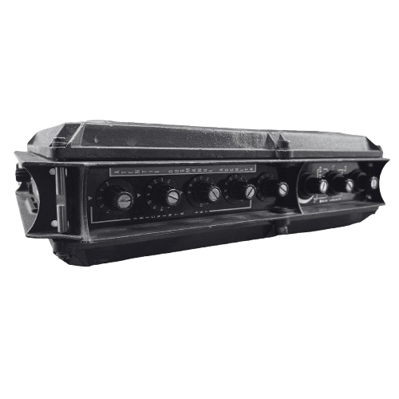

Ion Antonescu
In the tragic autumn of 1940, when Romania was brought to its knees by immense territorial losses, a figure returned to the stage of history who would definitively mark the country's fate: General Ion Antonescu. Vested with full powers and assuming the title of "Conducător" (Leader of the State), Antonescu took the reins of an isolated country at a time when Romania's survival depended on a radical choice.
The Order to Cross the Prut River
The defining moment of his regime came at the dawn of June 22, 1941. Through a now-famous order: "Soldiers, I order you: Cross the Prut!", Antonescu committed Romania to World War II alongside the Axis Powers. For the majority of Romanians at the time, this was not just a political alignment, but a "Holy War" for the liberation of their brethren in Bessarabia and Northern Bukovina, territories forcibly seized by the Soviet Union the previous year.
Beyond the Dniester
After the swift recovery of the lost territories, Antonescu made the strategic decision to continue the advance alongside the German army beyond the Dniester River. His motivation was pragmatic yet risky: he wanted to demonstrate loyalty to Adolf Hitler to later secure his support in recovering Northern Transylvania. This phase of the war led the Romanian army into bloody battles, such as the Siege of Odessa and the catastrophe at Stalingrad, where thousands of Romanian soldiers met their end far from home.
The End of the Regime
As the tide of the war turned against the Axis, Antonescu realized the imminence of a national disaster. Although he permitted discreet diplomatic contacts aimed at an armistice in Stockholm or Cairo, the Marshal refused to accept an unconditional surrender which, in his view, would have left the country at the mercy of the Soviet occupier.
This rigidity led to the outcome of August 23, 1944. In a desperate attempt to save the rest of the country from destruction, King Michael I dismissed and arrested Ion Antonescu, switching Romania to the Allied side. The General who had gone to war with the dream of national reunification would later be tried by a People's Tribunal and executed in 1946.
🔊 Marshal Ion Antonescu - Speech to the Legionnaires, October 6, 1940
"In the spirit of the Captain and of the nation, before the King and the General, we pledge through our supreme sacrifice to make together a people and a country like the holy sun in the sky!" (Click the radio to listen)
